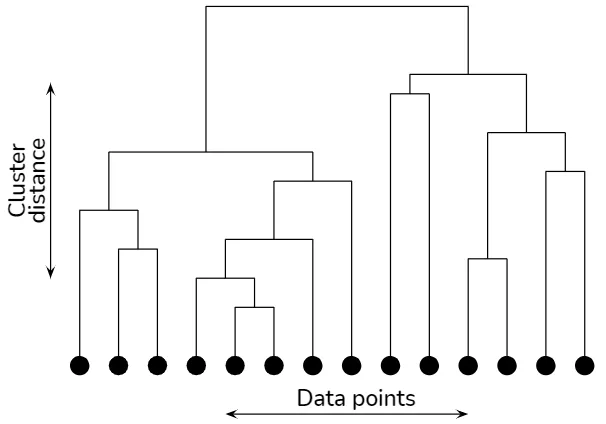
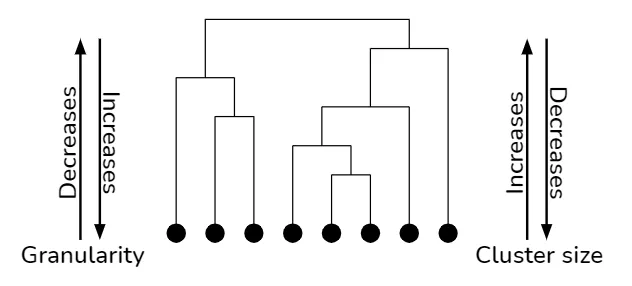
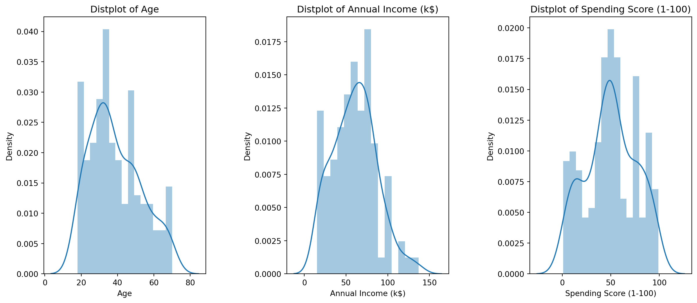
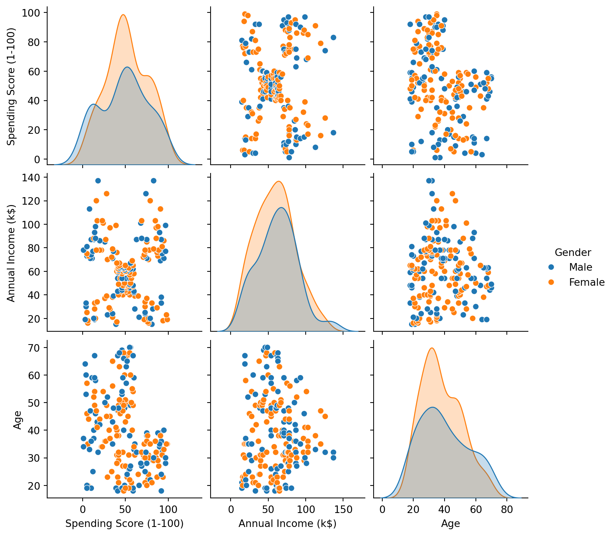
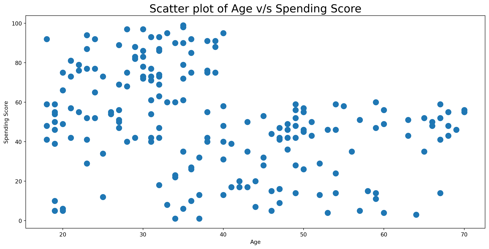
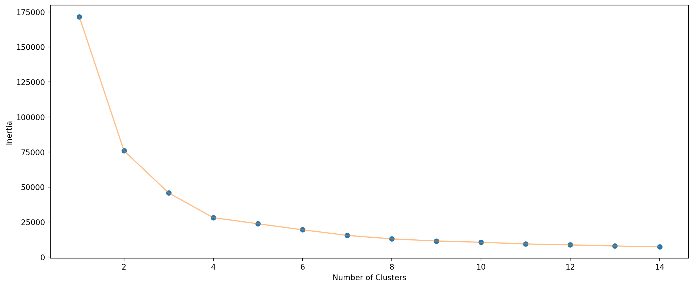
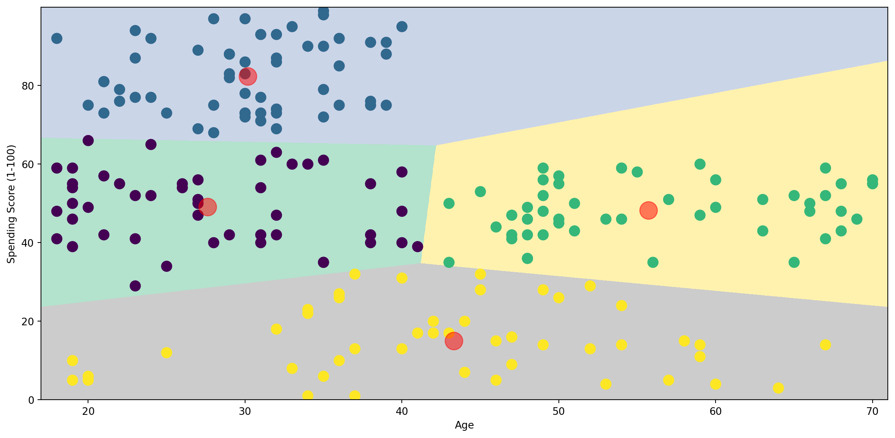
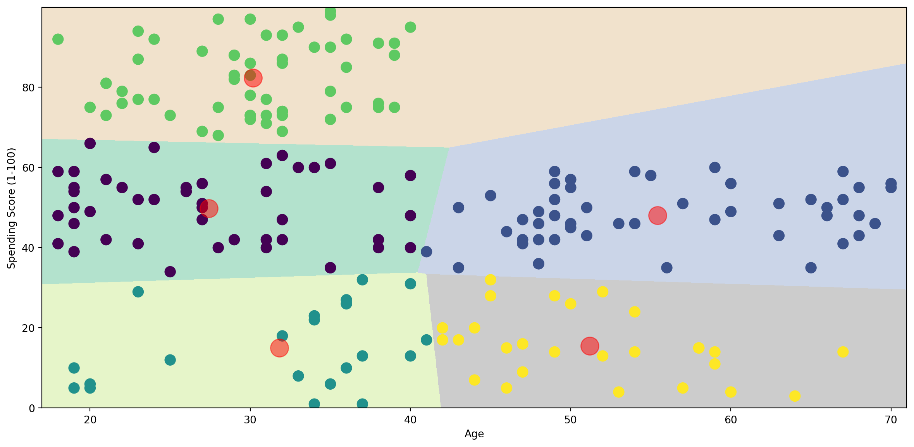
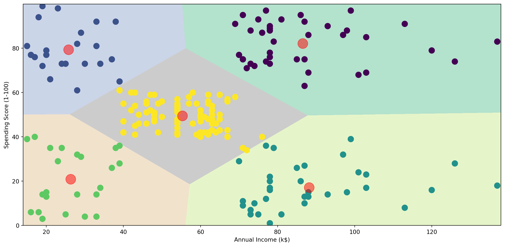
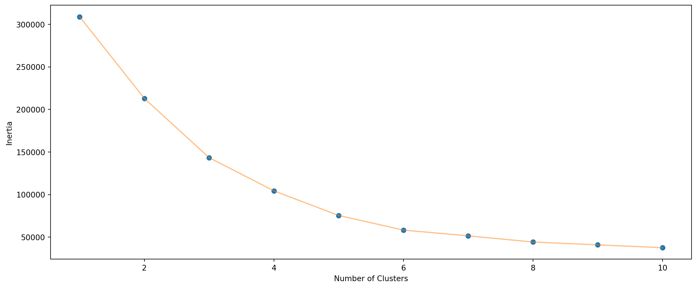

import numpy as np
import pandas as pd
import matplotlib.pyplot as plt
import seaborn as sns
import plotly as py
import plotly.graph_objs as go
from sklearn.cluster import KMeans
import warnings
warnings.filterwarnings('ignore')Contents:
Introduction to Clustering.
Different types of clustering.
Example of Clustering with Mall Customer Segmentation Data.
Data Visualization
Model implementation
Clustering result visualization
Clustering
Clustering is a data analysis technique used in machine learning and statistics. It involves grouping data points into sets, or clusters, such that points in the same cluster are more similar to each other than to those in other clusters. This similarity is usually based on features or characteristics of the data points. Clustering is a method of unsupervised learning, meaning it’s used to find patterns or structures within the data without using predefined labels or categories. It’s commonly used in various fields such as marketing, biology, and image processing, to identify and categorize groups in complex datasets.
Different types of clustering.
1. KMeans Clustering:
2. Hierarchical Clustering
3. DBSCAN (Density-Based Spatial Clustering of Applications with Noise):
1. K-Means Clustering
This algorithm categorizes data into a predetermined number (k) of clusters. The process involves calculating the mean (centroid) of each cluster and assigning data points to the nearest cluster based on distance. It’s an iterative process, with re-calculation of centroids and reassignment of points until the clusters stabilize. K-Means is widely used for market segmentation and organizing large data sets.
2. Hierarchical Clustering
This technique builds a hierarchy of clusters using a tree-like structure (dendrogram). It can be agglomerative (bottom-up) where each point starts as a separate cluster and pairs of clusters are merged as one moves up the hierarchy, or divisive (top-down), where all points start in one cluster that splits progressively. It’s useful for data with inherent hierarchical relationships and for visualizing data structure.
- Dendrogram The sole concept of hierarchical clustering lies in just the construction and analysis of a dendrogram. A dendrogram is a tree-like structure that explains the relationship between all the data points in the system.

However, like a regular family tree, a dendrogram need not branch out at regular intervals from top to bottom as the vertical direction (y-axis) in it represents the distance between clusters in some metric. As you keep going down in a path, you keep breaking the clusters into smaller and smaller units until your granularity level reaches the data sample. In the vice versa situation, when you traverse in up direction, at each level, you are subsuming smaller clusters into larger ones till the point you reach the entire system. As a result, hierarchical clustering is also known as clustering of clustering.

3. DBSCAN (Density-Based Spatial Clustering of Applications with Noise)
DBSCAN forms clusters based on the density of data points. It identifies ‘core’ points with many nearby neighbors and groups them into clusters, while marking less densely located points as outliers. This method is effective for data with clusters of similar density and is especially adept at identifying outliers and handling noise.
KMeans Clustering for Customer Data
Data Exploration
import pandas as pd
import numpy as np
import matplotlib.pyplot as plt
import seaborn as sns
from sklearn.cluster import KMeans
from sklearn.metrics import silhouette_score
from sklearn.preprocessing import MinMaxScalerdf = pd.read_csv('C:/Users/Lenovo/Desktop/MLBlog-gh-pages/posts/clustering/Mall_Customers.csv')
df.head()| CustomerID | Gender | Age | Annual Income (k$) | Spending Score (1-100) | |
|---|---|---|---|---|---|
| 0 | 1 | Male | 19 | 15 | 39 |
| 1 | 2 | Male | 21 | 15 | 81 |
| 2 | 3 | Female | 20 | 16 | 6 |
| 3 | 4 | Female | 23 | 16 | 77 |
| 4 | 5 | Female | 31 | 17 | 40 |
df.columnsIndex(['CustomerID', 'Gender', 'Age', 'Annual Income (k$)',
'Spending Score (1-100)'],
dtype='object')df.info()<class 'pandas.core.frame.DataFrame'>
RangeIndex: 200 entries, 0 to 199
Data columns (total 5 columns):
# Column Non-Null Count Dtype
--- ------ -------------- -----
0 CustomerID 200 non-null int64
1 Gender 200 non-null object
2 Age 200 non-null int64
3 Annual Income (k$) 200 non-null int64
4 Spending Score (1-100) 200 non-null int64
dtypes: int64(4), object(1)
memory usage: 7.9+ KBdf.describe()| CustomerID | Age | Annual Income (k$) | Spending Score (1-100) | |
|---|---|---|---|---|
| count | 200.000000 | 200.000000 | 200.000000 | 200.000000 |
| mean | 100.500000 | 38.850000 | 60.560000 | 50.200000 |
| std | 57.879185 | 13.969007 | 26.264721 | 25.823522 |
| min | 1.000000 | 18.000000 | 15.000000 | 1.000000 |
| 25% | 50.750000 | 28.750000 | 41.500000 | 34.750000 |
| 50% | 100.500000 | 36.000000 | 61.500000 | 50.000000 |
| 75% | 150.250000 | 49.000000 | 78.000000 | 73.000000 |
| max | 200.000000 | 70.000000 | 137.000000 | 99.000000 |
Checking for null values
df.isnull().sum()CustomerID 0
Gender 0
Age 0
Annual Income (k$) 0
Spending Score (1-100) 0
dtype: int64plt.figure(1 , figsize = (15 , 6))
n = 0
for x in ['Age' , 'Annual Income (k$)' , 'Spending Score (1-100)']:
n += 1
plt.subplot(1 , 3 , n)
plt.subplots_adjust(hspace = 0.5 , wspace = 0.5)
sns.distplot(df[x] , bins = 15)
plt.title('Distplot of {}'.format(x))
plt.show()
sns.pairplot(df, vars = ['Spending Score (1-100)', 'Annual Income (k$)', 'Age'], hue = "Gender")
<seaborn.axisgrid.PairGrid at 0x7fce331b5d90>
2D Clustering based on Age and Spending Score
plt.figure(1 , figsize = (15 , 7))
plt.title('Scatter plot of Age v/s Spending Score', fontsize = 20)
plt.xlabel('Age')
plt.ylabel('Spending Score')
plt.scatter( x = 'Age', y = 'Spending Score (1-100)', data = df, s = 100)
plt.show()
Deciding K value
X1 = df[['Age' , 'Spending Score (1-100)']].iloc[: , :].values
inertia = []
for n in range(1 , 15):
algorithm = (KMeans(n_clusters = n ,init='k-means++', n_init = 10 ,max_iter=300,
tol=0.0001, random_state= 111 , algorithm='elkan') )
algorithm.fit(X1)
inertia.append(algorithm.inertia_) File "C:\Users\Lenovo\AppData\Local\Programs\Python\Python312\Lib\site-packages\joblib\externals\loky\backend\context.py", line 257, in _count_physical_cores
cpu_info = subprocess.run(
^^^^^^^^^^^^^^^
File "C:\Users\Lenovo\AppData\Local\Programs\Python\Python312\Lib\subprocess.py", line 548, in run
with Popen(*popenargs, **kwargs) as process:
^^^^^^^^^^^^^^^^^^^^^^^^^^^
File "C:\Users\Lenovo\AppData\Local\Programs\Python\Python312\Lib\subprocess.py", line 1026, in __init__
self._execute_child(args, executable, preexec_fn, close_fds,
File "C:\Users\Lenovo\AppData\Local\Programs\Python\Python312\Lib\subprocess.py", line 1538, in _execute_child
hp, ht, pid, tid = _winapi.CreateProcess(executable, args,
^^^^^^^^^^^^^^^^^^^^^^^^^^^^^^^^^^^^^^^plt.figure(1 , figsize = (15 ,6))
plt.plot(np.arange(1 , 15) , inertia , 'o')
plt.plot(np.arange(1 , 15) , inertia , '-' , alpha = 0.5)
plt.xlabel('Number of Clusters') , plt.ylabel('Inertia')
plt.show()
Applying KMeans for k=4
algorithm = (KMeans(n_clusters = 4 ,init='k-means++', n_init = 10 ,max_iter=300,
tol=0.0001, random_state= 111 , algorithm='elkan') )
algorithm.fit(X1)
labels1 = algorithm.labels_
centroids1 = algorithm.cluster_centers_h = 0.02
x_min, x_max = X1[:, 0].min() - 1, X1[:, 0].max() + 1
y_min, y_max = X1[:, 1].min() - 1, X1[:, 1].max() + 1
xx, yy = np.meshgrid(np.arange(x_min, x_max, h), np.arange(y_min, y_max, h))
Z = algorithm.predict(np.c_[xx.ravel(), yy.ravel()]) plt.figure(1 , figsize = (15 , 7) )
plt.clf()
Z = Z.reshape(xx.shape)
plt.imshow(Z , interpolation='nearest',
extent=(xx.min(), xx.max(), yy.min(), yy.max()),
cmap = plt.cm.Pastel2, aspect = 'auto', origin='lower')
plt.scatter( x = 'Age', y = 'Spending Score (1-100)', data = df, c = labels1, s = 100)
plt.scatter(x = centroids1[: , 0] , y = centroids1[: , 1] , s = 300 , c = 'red' , alpha = 0.5)
plt.ylabel('Spending Score (1-100)') , plt.xlabel('Age')
plt.show()
Applying KMeans for k=5
algorithm = (KMeans(n_clusters = 5, init='k-means++', n_init = 10, max_iter=300,
tol=0.0001, random_state= 111 , algorithm='elkan'))
algorithm.fit(X1)
labels1 = algorithm.labels_
centroids1 = algorithm.cluster_centers_h = 0.02
x_min, x_max = X1[:, 0].min() - 1, X1[:, 0].max() + 1
y_min, y_max = X1[:, 1].min() - 1, X1[:, 1].max() + 1
xx, yy = np.meshgrid(np.arange(x_min, x_max, h), np.arange(y_min, y_max, h))
Z = algorithm.predict(np.c_[xx.ravel(), yy.ravel()]) plt.figure(1 , figsize = (15 , 7) )
plt.clf()
Z = Z.reshape(xx.shape)
plt.imshow(Z , interpolation='nearest',
extent=(xx.min(), xx.max(), yy.min(), yy.max()),
cmap = plt.cm.Pastel2, aspect = 'auto', origin='lower')
plt.scatter( x = 'Age', y = 'Spending Score (1-100)', data = df, c = labels1, s = 100)
plt.scatter(x = centroids1[: , 0] , y = centroids1[: , 1] , s = 300 , c = 'red' , alpha = 0.5)
plt.ylabel('Spending Score (1-100)') , plt.xlabel('Age')
plt.show()
2D Clustering based on Annual Income and Spending Score
X2 = df[['Annual Income (k$)' , 'Spending Score (1-100)']].iloc[: , :].values
inertia = []
for n in range(1 , 11):
algorithm = (KMeans(n_clusters = n ,init='k-means++', n_init = 10 ,max_iter=300,
tol=0.0001, random_state= 111 , algorithm='elkan') )
algorithm.fit(X2)
inertia.append(algorithm.inertia_)plt.figure(1 , figsize = (15 ,6))
plt.plot(np.arange(1 , 11) , inertia , 'o')
plt.plot(np.arange(1 , 11) , inertia , '-' , alpha = 0.5)
plt.xlabel('Number of Clusters') , plt.ylabel('Inertia')
plt.show()
algorithm = (KMeans(n_clusters = 5 ,init='k-means++', n_init = 10 ,max_iter=300,
tol=0.0001, random_state= 111 , algorithm='elkan') )
algorithm.fit(X2)
labels2 = algorithm.labels_
centroids2 = algorithm.cluster_centers_h = 0.02
x_min, x_max = X2[:, 0].min() - 1, X2[:, 0].max() + 1
y_min, y_max = X2[:, 1].min() - 1, X2[:, 1].max() + 1
xx, yy = np.meshgrid(np.arange(x_min, x_max, h), np.arange(y_min, y_max, h))
Z2 = algorithm.predict(np.c_[xx.ravel(), yy.ravel()]) plt.figure(1 , figsize = (15 , 7) )
plt.clf()
Z2 = Z2.reshape(xx.shape)
plt.imshow(Z2 , interpolation='nearest',
extent=(xx.min(), xx.max(), yy.min(), yy.max()),
cmap = plt.cm.Pastel2, aspect = 'auto', origin='lower')
plt.scatter( x = 'Annual Income (k$)' ,y = 'Spending Score (1-100)' , data = df , c = labels2 ,
s = 100 )
plt.scatter(x = centroids2[: , 0] , y = centroids2[: , 1] , s = 300 , c = 'red' , alpha = 0.5)
plt.ylabel('Spending Score (1-100)') , plt.xlabel('Annual Income (k$)')
plt.show()
3D Clustering Age , Annual Income and Spending Score
X3 = df[['Age' , 'Annual Income (k$)' ,'Spending Score (1-100)']].iloc[: , :].values
inertia = []
for n in range(1 , 11):
algorithm = (KMeans(n_clusters = n, init='k-means++', n_init = 10, max_iter=300,
tol=0.0001, random_state= 111, algorithm='elkan'))
algorithm.fit(X3)
inertia.append(algorithm.inertia_)plt.figure(1 , figsize = (15 ,6))
plt.plot(np.arange(1 , 11) , inertia , 'o')
plt.plot(np.arange(1 , 11) , inertia , '-' , alpha = 0.5)
plt.xlabel('Number of Clusters') , plt.ylabel('Inertia')
plt.show()
algorithm = (KMeans(n_clusters = 6 ,init='k-means++', n_init = 10 ,max_iter=300,
tol=0.0001, random_state= 111 , algorithm='elkan') )
algorithm.fit(X3)
labels3 = algorithm.labels_
centroids3 = algorithm.cluster_centers_
y_kmeans = algorithm.fit_predict(X3)
df['cluster'] = pd.DataFrame(y_kmeans)
df.head()| CustomerID | Gender | Age | Annual Income (k$) | Spending Score (1-100) | cluster | |
|---|---|---|---|---|---|---|
| 0 | 1 | Male | 19 | 15 | 39 | 4 |
| 1 | 2 | Male | 21 | 15 | 81 | 5 |
| 2 | 3 | Female | 20 | 16 | 6 | 4 |
| 3 | 4 | Female | 23 | 16 | 77 | 5 |
| 4 | 5 | Female | 31 | 17 | 40 | 4 |
import plotly as py
import plotly.graph_objs as go
trace1 = go.Scatter3d(
x= df['Age'],
y= df['Spending Score (1-100)'],
z= df['Annual Income (k$)'],
mode='markers',
marker=dict(
color = df['cluster'],
size= 10,
line=dict(
color= df['cluster'],
width= 12
),
opacity=0.8
)
)
data = [trace1]
layout = go.Layout(
title= 'Clusters wrt Age, Income and Spending Scores',
scene = dict(
xaxis = dict(title = 'Age'),
yaxis = dict(title = 'Spending Score'),
zaxis = dict(title = 'Annual Income')
)
)
fig = go.Figure(data=data, layout=layout)
py.offline.iplot(fig)df.head()| CustomerID | Gender | Age | Annual Income (k$) | Spending Score (1-100) | cluster | |
|---|---|---|---|---|---|---|
| 0 | 1 | Male | 19 | 15 | 39 | 4 |
| 1 | 2 | Male | 21 | 15 | 81 | 5 |
| 2 | 3 | Female | 20 | 16 | 6 | 4 |
| 3 | 4 | Female | 23 | 16 | 77 | 5 |
| 4 | 5 | Female | 31 | 17 | 40 | 4 |
df.to_csv("segmented_customers.csv", index = False)We have successfully used 2D and 3D K Means clustering on customer data. This approach has proven vital in formulating more effective customer acquisition strategies, significantly contributing to business growth. By identifying distinct patterns and segments in customer behavior and preferences, this method provides invaluable insights for targeted marketing and strategic business decisions.